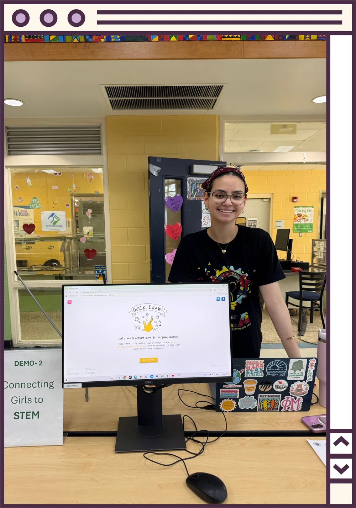

Let's Talk
Contact
- Hi Mariana! How can I reach you?
- Hello! Email is the best way: mariananerisapori@gmail.com
- Where are you based?
- Tallahassee, FL, at Florida State University
- Where can I see more of your work?
- I'm on LinkedIn and GitHub, come say hi!
